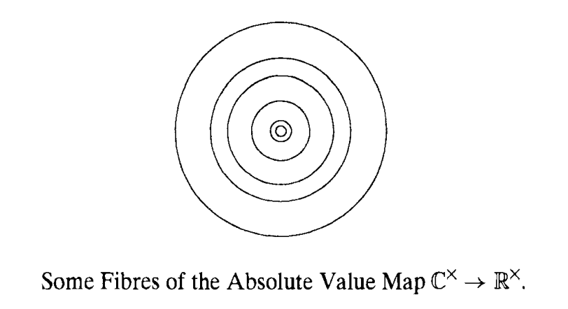
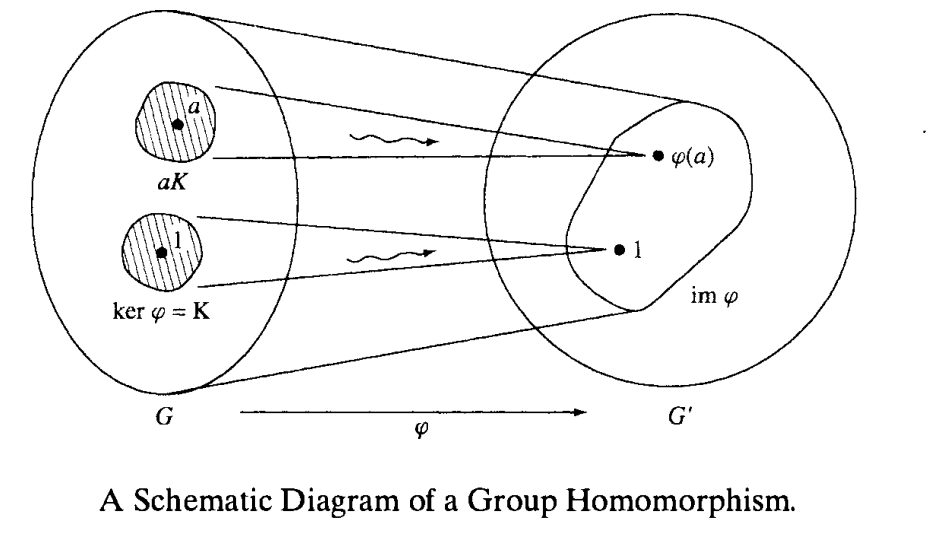
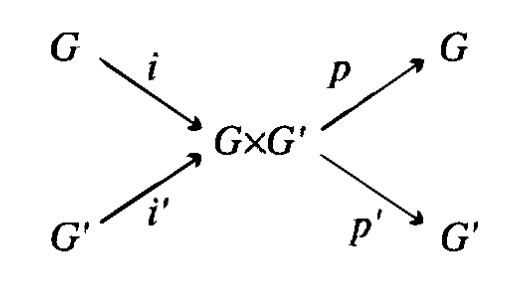

Groups¶
Definitions, Examples¶
Definition 1.1: Law of Composition
A law of composition on a set \(S\) is a binary function:
This law is associative if \((ab)c = a(bc)\). The law is commutative if \(ab = ba\). Associativity is more fundamental than commutativity because it relates to function composition.
Crucially, the set \(S\) is closed under the law of composition, meaning that composing any two elements of \(S\) produces another element in \(S\).
Definition 1.2: Group
A group is a set \(G\) with a law of composition on \(G\) with the following properties.
- The operation is associative, \((ab)c = a(bc)\) for all \(a, b, c \in G\).
- \(G\) has an identity element \(1\) such that \(1a = a1 = a\) for all \(a \in G\).
- For each \(a\) in \(G\), there exists an inverse element \(b\) such that \(ab = 1\).
In other words, a group is simply a set with a binary law of composition defined over it. The set contains an identity element and the law is associative and invertible. Naturally, the inverse of the identity is also the identity.
An abelian group is one whose operation is also commutative.
Example 1.1: Groups
- \(\mathbb{R} / \{0\}\) forms an abelian group under multiplication. Multiplication is associative, invertible (under exclusion of \(0\)) and the identity is \(1\).
- \(\mathbb{R}\) forms an abelian group under addition. Addition is associative, invertible (via subtraction), and the identity is \(0\).
- The set of invertible \(n \times n\) matrices forms a group under matrix multiplication. It's associative, invertible and the identity matrix is the identity. This is called the general linear group.
The order of a group \(G\) is the number of elements it contains denoted by \(|G|\). If \(|G|\) is finite, then \(G\) is a finite group. Otherwise, \(G\) is an infinite group.
Theorem 1.3: Cancellation Law
Let \(a, b, c\) be elements of a group \(G\). If \(ab = ac\) or \(ba = ca\), then \(b = c\). This is a direct consequence of the inverse.
Groups can also be obtained by excluding elements that are not invertible.
- \(\text{GL}_n(\mathcal{F}) = \{A \in \mathcal{F}^{n \times n} | \det(A) \neq 0\}\). This is the \(n \times n\) general linear group - the group of all invertible \(n \times n\) matrices. We can write \(\text{GL}_n(\mathbb{R})\) or \(\text{GL}_n(\mathbb{C})\) to indicate if we are working with real or complex matrices.
- Let \(M\) be the set of maps from a set \(T\) to itself. A map \(f: T \to T\) has an inverse iff it is bijective - in other words, \(f\) is a permutation of \(T\). These permutations form a group where the binary op. is function composition. The group of permutations of index set \(\{1, 2, \dots, n\}\) is called the symmetric group written like \(S_n\). \(|S_n| = n!\).
Important:
The elements of a permutation group are the permutations, not the set of indices.
Permutation Groups¶
Cyclic Notation¶
To write down a permutation, we typically use cycle notation. Consider the output of some permutation \(p\) to be
\(p\) maps each element in the upper row to the matching element in the bottom row. Writing the output of each permutation makes it a nightmare to track composition of permutations (which is what we really care about).
Instead, we use cycle notation. Pick some index, say \(3\). \(p(3) = 4\). \(p(4) = 1\). \(p(1) = 3\). So we have a cycle \((3, 4, 1)\). Since \(p(2) = 5\) and \(p(5) = 2\), we can write:
Basically, an index within a cycle gets mapped to the next element.
Consider \(q = (1 \ 4 \ 5 \ 2)\). We want to compute \(q \circ p\). In function composition, the inner function is applied first. So consider an index \(1\). By \(p\), \(1\) gets mapped to \(3\) and \(q\) leaves \(3\) alone. \(p(3) = 4\) and \(q(4) = 5\). \(p(5) = 2\) and \(q(2) = 1\). So we have the chain:
where the omitted \(2\) and \(4\) means that those indices are mapped to themselves (which is easily verifiable).
Consider \(S_2 = \{a, b\}\). All we can do is either apply the identity \(i\) or transpose \(\tau\). Since there are only two permutations, our group has order two.
Consider \(S_3\). This is the smallest group whose binary operation isn't commutative. Pick two permutations - the cyclic permutation \(x = (1, 2, 3)\) and the transposition \((1, 2)\). We have \(x^3 = 1\) and \(y^2 = 1\) (following the cycle).
It's also easily verifiable that \(yx = x^2y\). \(x^3 = 1 \implies x \circ x^2 = 1 \implies x^2 = x^{-1}\). Let's multiply both sides by \(y\). We get \(x^2 y = x^{-1} y\).
So \(x^2 y = yx\).
Thus our group is:
Any product of elements \(x, y\) can be shown to be equal to an element of \(S_3\).
These rules are called the defining relations for the group.
Permutation Signs¶
Any permutation \(p\) can be associated with a permutation matrix \(P\). Left-multiplicaiton by this matrix permutes the entries of a vector \(X\) using the permutation.
Consider \(p = (1 \ 2 \ 3)\) and associated matrix \(P\). Then,
Proposition 2.2.1: Permutation Matrices
- Any matrix with a single \(1\) per row and column is a permutation matrix (and vice versa).
- The determinant of a permutation matrix is \(\pm 1\).
- Let \(p, q\) be permutations with associated \(P, Q\). Then, \(pq\) has associated matrix \(PQ\).
Definition 2.2.2: Sign
The sign of a permutation is:
\(p\) is even if its sign is \(1\) and odd if its sign is \(-1\).
A permutation is called even if it involves an even number of transpositions (swaps) and odd if it involves an odd number of transpositions.
Subgroups¶
The general linear group and symmetric groups are important because many other groups are included in them as subgroups.
Definition 3.1: Subgroup
A subset \(H\) of group \(G\) is called a subgroup if
- Closure. If \(a, b \in H\), then \(ab \in H\).
- Identity. \(1 \in H\).
- Inverses. \(a \in H \implies a^{-1} \in H\).
The first condition states that the law of composition on \(G\) induces a law of composition on \(H\). The other conditions state that \(H\) is a group w.r.t. the induced law.
Example 3.1: Subgroups
- The group of \(n \times n\) real matrices with determinant \(1\) is a subgroup of the general linear group \(\text{GL}_n(\mathbb{R})\). This is called the special linear group, \(\text{SL}_n(\mathbb{R})\).
- Complex numbers of absolute value \(1\) are the set of points on the unit circle in the complex plane. It's a subgroup of the multiplicative group \(\mathbb{C}^{\times}\) called the circle group.
Each group \(G\) has two obvious subgroups - the group \(G\) itself and the trivial subgroup containing just the identity element. A subgroup is called a proper subgroup if its neither of these two.
Theorem 3.2: Subgroups of Additive Groups of Integers
Let \(S\) be a subgroup of the additive group \(\mathbb{Z}^{+}\). Either \(\mathbb{Z}\) is the trivial subgroup \(\{0\}\) of it has the form \(\mathbb{Z}a\) where \(a\) is the smallest positive integer in \(S\). Here,
Proof
Let \(S\) be a subgroup of \(\mathbb{Z}^{+}\). Then, \(0 \in S\). If \(S = \{0\}\), then its the trivial subgroup. Othherwise, there exists at least two more integers, namely \(n\) and \(-n\). WLOG, suppose \(n > 0\). We now show that \(S = \mathbb{Z}a\) where \(a\) is the smallest positive integer in \(S\). The way to show two sets are equivalent is to show that they are subsets of one another.
First, we show that \(\mathbb{Z}a \subseteq S\), namely that \(ka \in S\) for every integer \(k\). If \(k > 0\), then \(ka = (a + \dots + a)\) which is in \(S\) under closure. If \(k = 0\), then \(ka = 0 \in S\). If \(k < 0\), then \(-ka \in S\) so by the inverse property of \(S, ka \in S\). Therefore, \(ka \in S\).
Next, we show that \(S \subseteq \mathbb{Z}a\), i.e. every element \(n \in S\) is an integer multiple of \(a\), the smallest positive integer in \(S\). Consider an arbitrary element \(n \in S\). By the division theorem, we have \(n = qa + r\) where \(0 \leq r < a\). Naturally, \(qa \in \mathbb{Z}a\) since \(a \mid qa\). Since \(\mathbb{Z}a \subseteq S\), it follows that \(qa \in S\) as well. Since \(n, qa \in S\), it follows that \(n - qa = r\) is also in \(S\) as \(S\) is closed under addition and has an inverse. Therefore, \(r \in S\). Since \(a\) is the smallest positive integer in \(S\) and \(0 \leq r < a\), \(r = 0\) and \(n = qa \implies n \in \mathbb{Z}a\).
Therefore, \(S = \mathbb{Z}a\).
This theorem is quite strong - every possible subgroup of the additive group of integers is just a group where the elements are all integer multiples of some integer \(a\).
I review this only briefly since I dislike the book-keeping involved in the GCD algorithm.
Cyclic Subgroups¶
We consider an important abstract example of a subgroup, the cyclic subgroup generated by an arbitrary element \(x\) of a group \(G\) (using multiplicative notion).
Definition 3.1.1: Cyclic Subgroup
The cyclic subgroup \(H\) generated by \(x\) is:
This is the smallest subgroup of \(G\) containing \(x\) and is often written \(\langle x \rangle\).
Generally, the order of an element \(x\) of a group is the smallest integer \(k\) such that \(x^k = 1\).
The notation \(x^n\) represents an element of the group obtained under the particular law. For example, if \(G\) is the multiplicative group \(\mathbb{R}^{\times}\) and \(x = -1\), then \(\langle -1 \rangle = \{-1, 1\}\). Either \(x^n\) represents different elements or they don't. Consider the cases.
Proposition 3.1.2: Cyclic Subgroups
Let \(\langle x \rangle\) be the cyclic subgroup of a group \(G\) generated by \(x \in G\) and \(S = \{k \in \mathbb{Z} \mid x^k = 1\}\).
Then,
- \(S\) is a subgroup of \(\mathbb{Z}^{+}\).
- The powers \(x^r = x^s\) with \(r \geq s\) are equal iff \(x^{r - s} = 1\), i.e. if \(r - s \in S\).
- Suppose \(S\) is not the trivial subgroup. Then, \(S = \mathbb{Z}n\) for some positive integer \(n\). Then, \(1, x, x^2, \dots, x^{n - 1}\) are the distinct elements of subgroup \(\langle x \rangle\) and the order of \(\langle x \rangle\) is \(n\).
Basically, if \(c\) is the smallest positive integer such that \(x^c = 1\), then past \(c\), the group elements begin to recycle.
Then, the group \(\langle x \rangle = \{1, x, \dots, x^{n - 1}\}\) is called the cyclic group of order \(n\).
Within \(S_3\), \(x\) has order \(3\) and \(y\) has order \(2\). If \(x^n \neq 1\) for all \(n > 0\), then \(x\) has infinite order and the group is infinite cyclic.
We can also speak about the subgroup \(G\) generated from a subset \(U\). This is the smallest subgroup of \(G\) that contains \(U\) and it consists of all elements of \(G\) that can be expressed as a product of a "string" of elements in \(U\) and relevant inverses. A subset \(U\) of \(G\) is said to generate \(G\) if every element of \(G\) is such a product. For example, in \(S_3\), the set \(U = \{x, y\}\) generates \(S_3\). Elementary matrices generated \(\text{GL}_n\).
In those particular examples, inverses weren't needed but that's not always the case. Negative powers are generally needed to fill out the group.
A finite group is cyclic when some element's order equals the order of that group. Then, the element generates the group.
Homomorphisms¶
Definition 4.1: Homomorphism
Let \(G, G'\) be groups with group operations \(f, h\) respectively. A homomorphism \(\varphi: G \to G'\) is a map from \(G\) to \(G'\) such that for all \(a, b \in G\),
More succintly,
The left side says to multiply \(a, b\) in \(G\) and send their product to \(G'\) using \(\varphi\). The right side says to send \(a, b\) to \(G'\) using \(\varphi\) and then multiply their images using \(G'\)'s group operation.
Example 4.1: Homomorphisms
- The determinant function \(\text{GL}_n(\mathbb{R}) \to \mathbb{R}^{\times}\). If we multiply two matrices together (under matrix multiplication) and take its determinant, that's identical to taking the determinants of the operands and multiplying them together. Specifically, \(\det(AB) = \det(A) \cdot \det(B)\).
- The exponential map \(\exp: \mathbb{R}^{+} \to \mathbb{R}^{\times}\). Since \(e^{a + b} = e^a e^b\).
- The sign homomorphism \(\sigma: S_n \to \{\pm 1\}\). If you compose two permutations and then find their sign, that's equivalent to multiplying the signs together. This is basically the same as the determinant example.
There's also the trivial homomorphism \(\varphi: G \to G"\) maps every element of \(G\) to the identity element. If \(H\) is a subgroup of \(G\), the inclusion map \(i: H \to G\) where \(i(x) = x\) for \(x \in H\) is a homomorphism.
Proposition 4.2: Homomorphism Properties
- If \(a_1, \dots, a_k \in G\), then \(\varphi(a_1 \dots a_k) = \varphi(a_1) \dots \varphi(a_k)\).
- \(\varphi(1_G) = 1_{G'}\).
- \(\varphi(a^{-1}) = \varphi(a)^{-1}\).
Proof
Since \(1 \cdot 1 = 1\), then \(\varphi(1) \varphi(1) = \varphi(1)\). Using the inverse property, we have that \(\varphi(1) = 1\). We also have that \(1 = \varphi(a a^{-1}) = \varphi(a) \varphi(a^{-1}) \implies \varphi(a^{-1}) = \varphi(a)^{-1}\).
Definition 4.3: Image, Kernel
A group homomorphism determines two subgroups - the image and the kernel.
The image of a homomorphism is a subgroup of the range. We verify closure. Let \(x, y \in \text{Im} (\varphi)\). Then, there exist elements \(a, b\) such that \(\varphi(a) = x, \varphi(b) = y\). Since \(\varphi\) is a homomorphism, we have that \(\varphi(a) \varphi(b) = \varphi(ab) = xy\). Therefore, \(xy \in \text{Im} (\varphi)\) too.
The kernel of a homomorphism is a subgroup of \(G\) since if \(a, b \in \text{Ker} (\varphi)\), then \(\varphi(a) \varphi(b) = 1 \cdot 1 = 1\). But since \(\varphi\) is a homomorphism, then \(\varphi(a b) = \varphi(a) \varphi(b)\) so \(ab \in \text{Ker} (\varphi)\).
Importantly, the image is a subgroup of the range and the kernel is a subgroup of the domain.
Example 4.2: Kernels
- Consider the determinant homomorphism \(\det: \text{GL}_n(\mathbb{R}) \to \mathbb{R}^{\times}\). Then, \(\text{Ker}(\det) = \text{SL}_n(\mathbb{R})\). The identity in \(G' = \mathbb{R}^{+}\) is \(1\). The kernel of \(\det\) is the set of matrices with determinant \(1\) or \(\text{SL}_n(\mathbb{R})\).
- Consider the sign homomorphism \(\sigma: S_n \to \{\pm 1\}\). Then, \(\text{Ker}(\sigma) = A_n\) which is the group of even permutations (permuations with determinant \(1\)).
The kernel is important - it tells us which elements of \(G\) are mapped to the identity in \(G'\) and which pairs of elements have the same image in \(G'\).
Definition 4.4: Coset
If \(H\) is a subgroup of \(G\) and \(a \in G\), then
This is called the left coset of \(H\) in \(G\).
Proposition 4.5: Coset Conditions
Let \(\varphi: G \to G'\) be a homomorphism, \(a, b \in G\), and \(K\) be the kernel of \(\varphi\). Then, the following conditions are equivalent:
- \(\varphi(a) = \varphi(b)\).
- \(a^{-1}b \in K\).
- \(b \in aK\).
- \(bK = aK\).
Proof
Recall that the kernel exists in the domain of \(\varphi\). Suppose \(\varphi(a) = \varphi(b)\). Then, \(\varphi(a^{-1} b) = \varphi(a^{-1}) \varphi(b)\) by the definition of homomorphism. We know that \(\varphi(a^{-1}) = \varphi(a)^{-1}\). So we have \(\varphi(a^{-1} b) = \varphi(a)^{-1} \varphi(b) = \varphi(a)^{-1} \varphi(a) = 1 \implies a^{-1} b \in K\).
Since \(a^{-1} b \in K\), we have that \(a(a^{-1}b) = b \in aK\).
Important: Cosets
The important thing about cosets of the kernel is that they partition group outputs. In particular, if \(b \in aK\), then \(\varphi(a) = \varphi(b)\).
A particular coset of the kernel is the set of group elements which are all mapped to the same element. Together, all the cosets of the kernel partition the domain according to the elements of the image.
Additionally, note that a coset does not form a group. Consider \(AK\) where \(\det(A) = 7\) and \(K = \text{Ker}(\text{GL}_n)\). Then \(AK\) is the set of matrices with determinant \(7\). It does not include matrices with determinant \(1/7\).
Theorem 4.6: Injective Homomorphism
A homomorphism \(\varphi\) is injective iff its kernel \(K\) is the trivial subgroup \(\{1\}\) of \(G\).
Definition 4.7: Normal Subgroup
A subgroup \(N\) of \(G\) is a normal subgroup if for every \(a \in N\) and \(g \in G\), the conjugate \(gag^{-1} \in N\).
Proposition 4.8: Kernel Normal
The kernel of a homomorphism is a normal subgroup.
Proof
If \(a\) is in the kernel of \(\varphi\) and \(g\) is an element of \(G\), then,
Example 4.3: Normal Subgroups
-
\(\text{SL}_n\) is a normal subgroup of \(\text{GL}_n\). Consider \(A \in \text{SL}_n\), \(B \in \text{GL}_n\). Then,
$$ \det(BAB^{-1}) = \det(B) \det(A) \det(B^{-1}) = \det(B) \det(B)^{-1} = 1 $$ Therefore, \(BAB^{-1} \in \text{SL}_n\) so \(\text{SL}_n\) is a normal subgroup of \(\text{GL}_n\).
-
The alternating group \(A_n\) is a normal subgroup of the symmetric group \(S_n\). Consider \(p \in A_n\) where \(\sigma(p) = 1\) and \(q \in S_n\) where \(\sigma(q) = \pm 1\). Then, \(\sigma(pqp^{-1}) = 1\) since inverse permutations have the same sign (same number of transpositions forwards and backwards).
Every subgroup of an abelian group is normal due to commutativity. But subgroups of nonabelian groups don't need to be normal.
The center of a group \(G\) is the set of elements which commute with every element of \(G\).
It's always a normal subgroup of \(G\). The center of the special linear group \(\text{SL}_2(\mathbb{R})\) consists of \(I, -I\).
Isomorphisms¶
Definition 5.1: Isomorphism
An isomorphism \(\varphi: G \to G'\) is a bijective group homomorphism.
The key component is that its bijective. Recall that a bijection is a function which is both injective (one-to-one) and surjective (image \(=\) range).
Example 5.1: Isomorphisms
- \(e^x\) is an isomorphism when viewed as a map from \(\mathbb{R}^{+}\) to \(\mathbb{R}_{\geq 0}^{\times}\).
- Suppose \(a\) is an element of infinite order in group \(G\). Then the map \(n \mapsto a^n\) is an isomorphism from \(\mathbb{Z}^{+}\) to the infinite cyclic subgroup \(\langle a \rangle\) of \(G\).
- The map \(S_n \to P\) is an isomorphism. It sends a permutation to its associated matrix.
We can verify that a homomorphism \(\varphi: G \to G'\) is an isomorphism provided that \(\text{Ker}(\varphi) = \{1\}\) and that \(\text{Im}(\varphi) = G'\).
Lemma 5.2: Inverse of an Isomorphisms is Isomorphic
If \(\varphi: G \to G'\) is an isomorphism then \(\varphi^{-1}: G' \to G\) is an isomorphism.
Proof
It suffices to show that \(\varphi^{-1}\) is homomorphic since the inverse of a bijection is bijective. Consider \(a, b \in G'\) and \(x, y \in G\) such that \(\varphi^{-1}(a) = x, \varphi^{-1}(b) = y\). We WTS that \(\varphi^{-1}(a) \varphi^{-1}(b) = \varphi^{-1}(ab)\).
When \(\varphi: G \to G'\) is an isomorphism, we can do the computation in either \(G\) or \(G'\) and carry it over to the other group using \(\varphi\) or \(\varphi^{-1}\).
For example, we often blur the distinction between \(S_n\) and the isomorphic group \(\mathcal{P}\) of permutation matrices.
The groups isomorphic to \(G\) form the isomorphism class of \(G\).
An automorphism is an isomorphism from a group \(G\) to itself. The identity map is an automorphism. The most important type of automorphism is conjugation. Let \(g\) be a fixed element of \(G\). Conjugation by \(g\) is an automorphism defined as:
This is a homomorphism:
Conjugation with \(g^{-1}\) acts as an inverse meaning that it is also bijective. Therefore, it's also an automorphism.
Conjugation under abelian groups is just the identity map \(gxg^{-1} = x\). Noncommutative groups have nontrivial conjugations and thus have automorphisms different from the identity.
The elemenet \(gxg^{-1}\) is the conjugate of \(x\) by \(g\) and two elements \(x, x'\) of \(G\) are conjugate if \(x' = gxg^{-1}\). The conjugate has the same order as the element \(x\) in the group (since it is the image of \(x\) under automorphism).
The commutator \(aba^{-1}b^{-1}\) is an element associated with pair \(a, b\).
Lemma 5.3: Commutator
Two element \(a, b\) commute \(ab = ba\) iff \(aba^{-1} = b\) which is equivalent to \(aba^{-1} b^{-1} = 1\).
Equivalence Relations, Partitions¶
Definition 6.1: Partition
A partition \(\Pi\) of a set \(S\) is a division of \(S\) into non-overlapping, non-empty subsets. If \(S = \{1, 2, 3\}\), a possible partition is \(\Pi = \{\{1\}, \{2, 3\}\}\).
Definition 6.2: Equivalence Relation
An equivalence relation on a set \(S\) is a relation between pairs of elements on \(S\) written as \(a \sim b\). An equivalence relation is required to be:
- transitive. If \(a \sim b\) and \(b \sim c\), then \(a \sim c\).
- symmetric. If \(a \sim b\), then \(b \sim a\).
- reflexive. For all \(a\), \(a \sim a\).
Example 6.1: Equivalence Relations
- Congruence of triangles (triangles of the same shape, size) is an equivalence relation on the set of triangles in a plane.
- Conjugacy. We say that \(a \sim b\) if \(b = gag^{-1}\) for some group element \(g\). This is reflexive since \(a = gag^{-1}\) where \(g = 1\). This is also symmetric. If \(a = gbg^{-1}\), then \(b = g^{-1} a g\). Finally, this is symmetric. Suppose \(a = gbg^{-1}\) and \(b = hch^{-1}\). Then, \(a = ghch^{-1}g^{-1}\).
Proposition 6.3: Equivalence Relations are bijective to Partitions
An equivalence relation on \(S\) determines a partition on \(S\) and vice versa.
Proof
Given a partition of \(S\), say that \(a \sim b\) if \(a, b\) lie in the same subset of a partition. Clearly, reflexivity, symmetry, and transitiveness are satisified.
Given an equivalence relation, define an equivalence class as
The subset that contains \(a\) is the set of elements \(b\) such that \(a \sim b\). We will then show that the equivalence classes on \(S\) partition \(S\).
First, each equivalence class is non-empty since they at least include \(a\). Second, the union of these classes is \(S\) - each element of \(S\) at least belongs to its own equivalence class. Finally, we will show that these classes are disjoint.
Consider distinct equivalence classes \(C_a, C_b\). Suppose there existed some element \(c\) such that \(c \in C_a, C_b\). Then, \(c \sim b\) and \(c \sim a\). However, by transitivity, this would imply that \(a \sim b\) and that \(C_a = C_b\). Since these equivalence classes are distinct, there can be no such element belonging to both classes. Therefore, the equivelance classes are disjoint.
The relation on a group defined as \(a \sim b\) if \(a, b\) have the same order is an equivalence relation.
Given some partition \(\Pi\) of a set \(S\), we can construct a new set \(\bar{S}\) whose elements are the subsets. If \(U\) is such a subset, we will write \([U]\) as the relevant element of \(\bar{S}\). So when given an equivalence relation on \(S\), we obtain \(\bar{S}\) whose elements are the equivalence classes \([C_a]\). We interpret \(a \sim b\) to mean that \(a, b\) become equal in \(\bar{S}\) since \(C_a = C_b\). Then, in \(\bar{S}\), more elements have been deemed "equal" than in \(S\) (i.e. congruent triangles).
For any equivalence relation, there's a natural surjective map:
that takes an element \(a\) to its equivalence class, \(\pi(a) = [C_a]\) or \(\pi(a) = \bar{a}\). For example, if \(a, b \in S\), then \(\bar{a} = \bar{b} \iff a \sim b\).
We can frequently choose representative elements of each equivalence class. For example,
Fibres¶
Any map of sets \(f: S \to T\) gives an equivalence relation on its domain \(S\) defined by the rule \(a \sim b\) if \(f(a) = f(b)\).
Definition 6.1.1: Fibres
The inverse image or fibre of an element \(t \in T\) is:
Unless \(f\) is bijective, \(f^{-1}\) will not be a map.
The elements of the image correspond bijectively to non-empty fibres which are equivalence clsses of the domain \(S\) and elements of \(\bar{S}\).

Example 6.1.1: Group Order
If \(G\) is a finite group, we can define a map \(f: G \to \mathbb{N}\) letting \(f(a)\) be the order of the element \(a\) of \(G\). The fibres of this map are the sets of elements with the same order.
We return to a group homomorphism \(\varphi: G \to G'\). The equivalence relation defined by \(\varphi\) is denoted by \(\equiv\) and is referred to as congruence.
Elements \(a, b\) are congruent iff \(b\) is in the coset \(aK\) of the kernel \(K\).
Proposition 6.1.2: Cosets Partition
Let \(K\) be the kernel of homomorphism \(\varphi: G \to G'\). The fibre of \(\varphi\) that contains an element \(a\) of \(G\) is the coset \(aK\) of \(K\). The cosets partition the group \(G\) and correspond to elements of the image of \(\varphi\).

Cosets¶
AS before, if \(H\) is a subgroup of \(G\) and \(a\) is an element of \(G\), then the subset:
is called the left coset of \(H\). The subgroup \(H\) is a left coset since \(H = 1H\).
The cosets of \(H\) in \(G\) are equivalence classes for the congruence relation \(a \equiv b\) if \(b = ah\) for some \(h \in H\).
Transitivity. Suppose that \(a \equiv b, b \equiv c\). Then, \(b = ah, c = bh' \implies c = a (h h')\). Since \(H\) is a subgroup, \(hh' \in H\), therefore, \(a \equiv c\).
Symmetry. Suppose that \(a \equiv b\). Then, \(b = ah \implies a = bh^{-1}\). Since \(H\) is a subgroup, \(h^{-1} \in H\) so \(b \equiv a\).
Reflexivity. \(a = ah\) where \(h = 1\) so \(a \equiv a\).
We've used the defining properties of a subgroup here - closure, inverse, and identity. Since cosets from the equivalence classes for the congruence relation, we have that:
Corollary 7.1: Coset Partition
The left cosets of a subgroup \(H\) of group \(G\) partition the group.
The number of left cosets of a subgroup \(H\) is called the index of \(H\) in \(G\) denoted by \([G:H]\). Consider \(S_3\). The element \(y\) generates a cyclic subgroup of order \(2\) so we have \(H = \{1, y\}\). Then, we have three left-cosets of \(H\) in \(G\): \(H, xH, x^2H\).
The index of the subgroup \(\langle y \rangle\) is \(3\).
Lemma 7.2: Coset Order
All left cosets \(aH\) of a subgroup \(H\) of \(G\) have the same order.
Proof
Multiplication by \(a\) sends \(h \to ah\). Each coset has the same number of "base" elements \(h\). The map is bijective since its inverse is multiplication by \(a^{-1}\).
In other words, all cosets have the same order as the subgroup they were generated from.
Thus we obtain the counting formula:
The order of \(G\) is the order of \(H\) times the number of cosets. This works since cosets all have the same order and they partition the group.
It follows from the counting formula that \(|H| \mid |G|\). Specifically,
Theorem 7.3: Lagrange's Theorem
Let \(H\) be a subgroup of a finite group \(G\). Then, \(|H| \mid |G|\).
As a corollary, let \(a \in G\). Then, \(|\langle a \rangle | \mid |G|\).
Corollary 7.4: Primes
Suppose \(|G|\) is prime \(p\). Let \(a \in G, a \neq 1\). Then, \(G\) is the cyclic group generated by \(a\).
Proof
The order of an element \(a \neq 1\) is greater than \(1\) and divides \(|G| = p\). However, since \(p\) is prime, it follows that \(|a| = p\). This is the order of cyclic subgroup \(\langle a \rangle\). Therefore, \(\langle a \rangle = G\).
Groups of order \(p\) form an isomorphism class, the class of cyclic groups of order \(p\).
The coutning formula can also be applied when a homomorphism \(\varphi: G \to G'\) is given. The left cosets of the kernel \(\text{Ker}(\varphi)\) are the non-empty fibres of the map \(\varphi\) in a bijective correspondence with the image:
Corollary 7.5: Divisibility of Kernel Order
Let \(\varphi: G \to G'\) be a homomorphism of finite groups. Then,
- \(|G| = |\text{Ker}(\varphi)| \cdot |\text{Image}(\varphi)|\).
- \(|\text{Ker}(\varphi)|\) divides \(|G|\).
- \(|\text{Image}(\varphi)|\) divides \(|G|\) and \(|G'|\).
Proof
We have that \([G: \text{Ker}(\varphi)] = |\text{Image}(\varphi)|\): the number of left cosets of the kernel is equivalent to the number of elements in the image. All of these cosets are bijective with the kernel so they have the same order and they partition the group so we can express \(|G| = \text{ Coset Size } \times \text{ Number of Cosets }\). Since the cosets are bijective with the kernel, we have that \(\text{ Coset Size } = |\text{Ker}(\varphi)|\) and since each coset corresponds to a single output element in the image we have \(\text{ Number of Cosets } = |\text{Image}(\varphi)|\). Therefore, \(|G| = |\text{Ker}(\varphi)| \cdot |\text{Image}(\varphi)|\) and \(|\text{Ker}(\varphi)|\) divides \(|G|\).
More generally, we know the the order of a subgroup divides the order of the group. Since the image is a subgroup in the range, we have \(|\text{Image}(\varphi)|\) divides \(|G'|\).
Proposition 7.6: Multiplicative Index
Let \(K \subset H \subset G\) be subgroups of \(G\). Then, \([G:K] = [G:H] [H:K]\).
Proof
Suppose \([G:H] = m, [H:K] = n\). We list \(m\) cosets of \(H\) in \(G\) as \(g_1H, \dots, g_mH\). This forms a partition on \(G\). We also have that \(H = h_1K, \dots, h_nK\). Therefore, \(g_iH = g_i h_1K \cup \dots \cup g_i h_nK\) will partition \(g_iH\). Since each of the \(m\) cosets of \(H\) can be partitioned into \(n\) cosets of \(K\), we have that \([G:K] = mn\).
Right Cosets¶
Definition 7.1.1: Right Cosets
The right cosets of a subgroup \(H\) of a group \(G\) are the sets
Right cosets are equivalence classes for the relation \(a \equiv b\) if \(b = ha\) for some \(h \in H\). Right cosets partition the group \(G\) but not necessarily in the same as left cosets. The right cosets of \(\langle y \rangle\) of \(S_3\) are \(Hy, Hx^2y, Hxy\).
If a subgroup is normal, then its right and left cosets are equal.
Proposition 7.1.2: Right cosets
Let \(H\) be a subgroup of a group \(G\). Then, the following conditions are equivalent:
- \(H\) is a normal subgroup. For all \(h \in H, g \in G\), \(ghg^{-1} \in H\).
- \(\forall g \in G, gHg^{-1} = H\).
- \(\forall g \in G, gH = Hg\).
- Every left coset of \(H\) in \(G\) is a right coset.
Proof
Let \(gHg^{-1}\) be the set of all elements \(ghg^{-1}\) with \(h \in H\).
Suppose \(H\) is normal. Then, for all \(g \in G\), we have that \(gHg^{-1} \subset H\). Therefore, \(H \subset g^{-1} H g = g H g^{-1}\). Therefore, \(H = gHg^{-1}\).
If \(gHg^{-1} = H\), then \(gH = Hg\). This means that left cosets are equivalent to right cosets.
When is a right coset equal to a left coset? Right cosets partition the group \(G\) and have an element in common with the left coset, namely \(g\). Therefore, they must be the same coset (if a left coset \(gH\) is to be equal to any right coset, it must be \(Hg\).).
Proposition 7.1.3: Subgroups
- If \(H\) is a subgroup of \(G\) and \(g \in G\), then \(gHg^{-1}\) is also a subgroup.
- If \(G\) has one subgroup \(H\) of order \(r\), then that subgroup is normal.
Proof
Conjugation by \(g\) is an automorphism and \(gHg^{-1}\) is the image of \(H\) under conjugation.
If there is only one subgroup \(H\) of order \(r\), then \(gHg^{-1}\) preserves that order (since it's bijective) so \(H = gHg^{-1}\).
Correspondence Theorem¶
Let \(\varphi: G \to G'\) be a homomorphism with \(H\) being a subgroup of \(G\). We can restrict \(\varphi\) to \(H\):
This restriction is a homomorphism since \(\varphi\) is a homomorphism and:
Recall the original counting formula, \(|G| = |H| * [G:H]\). The order of the group is the order of the subgroup times the index of \(H\) in \(G\). Here we've restricted the homomorphism and we're specifically considering the kernel. So we have:
since the image is bijective with the number of cosets of the kernel. We will use this fact extensively.
Example 8.1: Sign Homomorphism
Consider \(\sigma: S_n \to \{\pm1\}\). Suppose a subgroup \(H\) of \(S_n\) has odd order. We don't know the order of the kernel but since \(|H|\) is odd, it follows that \(|\text{Im}(\varphi|_H)|\) cannot be even. Since \(|\{\pm1\}| = 2\), the restricted map must have \(|\text{Im}(\varphi|_H)| = 1\). Since the \(\varphi|_H\) takes \(1 \in H\) to \(1\), it follows that \(|\text{Im}(\varphi|_H)| = \{1\}\).
Therefore, \(|\text{Ker}(\varphi|_H)| = A_n\).
Now consider the cyclic subgroup \(\langle q \rangle\) with order \(m\), i.e. \(\langle q \rangle = \{1, q, \dots, q^{m - 1}\}\). Since \(|m|\) is odd, it follows that \(|m| \subseteq A_n\).
Generally, permutations with odd orders have signs \(+1\) and so are considered even permutations.
Proposition 8.1: Normality
Let \(\varphi: G \to G'\) be a homomorphism with kernel \(K\). Let \(H'\) be a subgroup in the range \(G'\). Denote the inverse image \(H = \varphi^{-1}(H')\). Then, \(H\) is a subgroup of \(G\) containing \(K\).
If \(H"\) is a normal subgroup of \(G'\), then \(H\) is a normal subgroup of \(G\). If \(\varphi\) is surjective and \(H\) is a normal subgroup of \(G\), then \(H'\) is a normal subgroup of \(G'\).
Intuitively, a subgroup in the range must contain the identity. Therefore, it's inverse image must contain the kernel (although the inverse image isn't guaranteed to be a map).
Proof
By definition, \(\varphi^{-1}(H') = H = \{x \in G: \varphi(x) \in H'\}\). If \(x \in \text{Ker}(\varphi)\), then \(\varphi(x) = 1\). Since \(1 \in H'\), it follows that \(K \subseteq H\). We now verify conditions of a subgroup.
Closure: Suppose \(x, y \in H\). Then, \(\varphi(x) \varphi(y) = \varphi(xy) \in H'\). Then, \(\varphi^{-1}(xy) = xy\). Therefore, \(H\) is closed.
Identity: \(1 \in H\) since \(\varphi(1) = 1 \in H'\).
Inverse: Let \(x \in H\). Then, \(\varphi(x) \in H'\) and \(\varphi^{-1}(x) = \varphi(x^{-1}) \in H' \implies x^{-1} \in H\).
Suppose \(H'\) is a normal subgroup. Let \(x \in H, g \in G\). Then, \(\varphi(gxg^{-1}) = \varphi(g) \varphi(x) \varphi(g^{-1})\) is a conjugate of \(\varphi(x) \in H'\). Since \(H'\) is normal, it follows that \(\varphi(g) \varphi(x) \varphi(g^{-1}) \in H' \implies gxg^{-1} \in H\).
Suppose \(H\) is a normal subgroup of \(G\) and \(\varphi\) is surjective. Let \(a \in H', g \in G'\). Since \(\varphi\) is surjective, it follows that each of these elements has a corresponding element \(x, y\) such that \(a = \varphi(x), g = \varphi(y)\). Therefore, \(\varphi^{-1}(gag^{-1}) = y^{-1} x y\). Since \(x \in H\) and \(H\) is normal, it follows that \(y^{-1} x y \in H\). Therefore, \(\varphi(y^{-1} x y) = gag^{-1} \in H' \implies H'\) is normal.
Theorem 8.2: Correspondence Theorem
Let \(\varphi: G \to G'\) be a surjective homomorphism with kernel \(K\). Then, there's a bijective correspondence between subgroups of \(G'\) and subgroups of \(G\) containing \(K\).
Each subgroup \(H\) of \(G\) containing \(K\) corresponds to \(\varphi(H) \subseteq G'\). Each subgroup \(H'\) of \(G'\) corresponds to \(\varphi^{-1}(H') \in G\).
For corresponding subgroups \(H, H'\), \(H\) is normal in \(G\) iff \(H'\) is normal in \(G'\).
Additionally, \(|H| = |H'| |K|\).
Proof
Let \(H\) be a subgroup of \(G\) containing \(K\) and \(H'\) a subgroup of \(G'\). We must check that
- \(\phi(H)\) is a subgroup of \(G\) (true since \(\phi(H)\) is the image of the homomorphism \(\varphi|_H\))
- \(\varphi^{-1}(H)\) is a subgroup of \(G\) containing \(K\)
- \(H'\) is a normal subgroup of \(G'\) iff \(H\) is a normal subgroup of \(G\)
- the correspondence is bijective; \(\varphi(\varphi^{-1}(H)) = \varphi^{-1}(\varphi(H)) = H\) \(|\varphi^{-1}(H)| = |H'| |K|\)
The 2nd and 3rd point follow from the normality proposition. Generally, the equality \(\varphi(\varphi^{-1}(H)) = H\) is true for any surjective mapping and \(H \subset \varphi^{-1}(\varphi(H))\). We verify the other direction. Suppose \(x \in \varphi^{-1}(\varphi(H))\). Then, \(\varphi(x) \in \varphi(H)\) where \(\varphi(x) = \varphi(a)\) for some \(a \in H\). Then, \(a^{-1} x \in K\) (refer to coset section) so \(a^{-1} x \in H\). Since \(a \in H, a^{-1} x \in H\), it follows that \(x \in H\) too.
Product Groups¶
Definition 9.1: Product Group
Let \(G, G'\) be two groups. The product set \(G \times G'\) is the set of pairs \((a, a')\) with \(a \in G, a' \in G'\). This can be made into a group via component-wise multiplication:
The pair \((1, 1)\) is the identity and the inverse of \((a, a')\) is \((a^{-1}, a'^{-1})\). The associative law follows from the associativity in \(G, G'\).
This group is called the product of \(G, G'\) denoted by \(G \times G'\).
Let \(i(x) = (x, 1)\), \(i'(x') = (1, x')\), \(p(x, x') = x\) and \(p'(x, x') = x'\). Then, we obtain the following homomorphism diagram:

The injective homomorphisms \(i\), \(i'\) identify \(G, G'\) with their images, the subgroups \(G \times 1\) and \(1 \times G'\) of \(G \times G'\). The maps \(p, p'\) are surjective and the kernel of \(p\) is \(1 \times G'\) while the kernel of \(p'\) is \(G \times 1\). These are the projections.
If we can decompose a group \(G\) as a product of subgroups \(H, H'\) such that \(G\) is isomorphic to \(H \times H'\), we can better understand \(G\) through its simpler factors.
Consider the cyclic group \(C_6\). This is isomorphic to \(C_2 \times C_3\). Suppose \(C_2 = \langle y \rangle\) where \(y^2 = 1\) and \(C_3 = \langle z \rangle\) where \(z^3 = 1\). Let \(x = (y, z)\) of \(C_2 \times C_3\). The smallest positive integer \(k\) such that \(x^k = (y^k, z^k) = (1, 1)\) is \(k = 6\). So \(x\) has order \(6\). Since \(C_2 \times C_3\) also has order \(6\), it's equal to \(\langle x \rangle\). The powers of \(x\) are:
Since \(C_2 \times C_3\) is cyclic and has order \(6\), it's isomorphic to \(C_6\).
Proposition 9.2: Relative Prime Cyclic Groups
Let \(r\) and \(s\) be relatively prime. A cyclic group of order \(rs\) is isomorphic to the product of a cyclic group of order \(r\) and a cyclic group of order \(s\).
A cyclic group of order \(4\) is not isomorphic to a product of two cyclic groups of order $2. Consider \(C_2 \times C_2\). This has \(4\) elements, \((1, 1), (y, 1), (1, z), (y, z)\). Squaring any of these elements produces \((1, 1)\). Therefore, the elements of this group have at most order \(2\) and \(C_2 \times C_2\) is not cylic so it cannot be isomorphic to \(C_6\).
Proposition 9.3: Characterizing Product Groups
Let \(H, K\) be subgroups of \(G\) and \(f: H \times K \to G\) be the multiplication map where \(f(h, k) = hk\). Then, it's image is \(HK = \{hk \mid h \in H, k \in K\}\). Then,
- \(f\) is injective iff \(H \cap K = \{1\}\).
- \(f\) is a homomorphism from \(H \times K\) to \(G\) iff \(kh = kh\).
- If \(H\) is a normal subgroup of \(G\), then \(HK\) is a subgroup of \(G\).
- \(f\) is an isomorphism iff \(H \cap K = \{1\}\), \(HK = G\), and \(H, K\) are normal subgroups of \(G\).
Proof
(a) Suppose there exists \(x \neq 1 \in H \cap K\). Then, \(x^{-1} \in H\). Then, \(f\) cannot be injective since it maps \((1, 1)\) to \(1\) and it also maps \((x^{-1}, x)\) to \(1\).
(b) Let \((h_1, k_1)\) and \((h_2, k_2)\) be elements of \(H \times K\). The product is \((h_1 h_2, k_1, k_2)\). \(f(h_1 h_2, k_1, k_2) = h_1 h_2 k_1 k_2\) while \(f(h_1, k_1) f(h_2, k_2) = h_1 k_1 h_2 k_2\). Therefore, \(h_1 h_2 k_1 k_2 = h_1 k_1 h_2 k_2\). This is equal iff \(h_2 k_1 = k_1 h_2\).
(c) Suppose \(H\) is a normal subgroup. Note \(KH\) is a union of the left cosets \(kH\) with \(k \in K\) and that \(HK\) is a union of the right cosets \(Hk\). Since \(H\) is normal, then \(KH = HK\). We verify closure and inverses.
Take \(h_1 k_1\) and \(h_2 k_2\). Then, \(h_1 k_1 h_2 k_2 = (h_1 h_2) (k_1 k_2) = h' k'\). Therefore, \(HK\) is closed.
Therefore, \(HK\) is closed under inverses.
(d) Suppose \(H, K\) satisfy the given conditions. Then, \(f\) is bijective. By (b), this is additionally an isomorphism provided that \(hk = kh\) for all \(k \in K, h \in H\). Consider the commutator \((hkh^{-1})k^{-1} = h (kh^{-1} k^{-1})\). Since \(H, K\) are normal subgroups, the left element is in \(K\) and the right element is in \(H\). Since \(H \cap K = \{1\}\), it follows that \(hkh^{-1}k^{-1} = 1 \implies hk = kh\). Therefore, \(f\) is an isomorphism.
Suppose \(f\) is an isomorphism. Therefore, it is injective which implies that $H \cap K = {1} by (a). It is also surjective which implies that \(HK = G\). We show that \(H, K\) are normal subgroups of \(G\). Pick \(h \in H, g \in G\). Since \(HK = G\), we have that G = h' k'$.
Then,
Therefore, \(H\) is normal. The same process can be repeated for \(K\).
Proposition 9.4: Classifying Groups of Order \(4\)
There are two isomorphism classes of groups of order \(4\) - the class of cyclic groups \(C_4\) and the class of the Klein Four Group which is isomorphic to \(C_2 \times C_2\).
Proof
Suppose \(|G| = 4\). The order of any element \(x\) of \(G\) divides \(4\) so then:
- If \(G\) contains an element of order \(4\), then it's cyclic with order \(4\).
- Otherwise, all elements of \(G\) (except the identity) have order \(2\).
Then, \(x = x^{-1}\) for \(x \in G\). Consider \(x, y \in G\). Then, \(xy\) has order \(2\) so \(xy x^{-1} y^{-1} = (xy) (xy) = 1 \implies xy x^{-1} y^{-1} = xy y^{-1} x^{-1} = xy yx \implies xy = yx\). Therefore \(G\) is abelian and every subgroup of \(G\) is normal. Let \(H, K\) be distinct subgroups of \(G\) generated respectively by \(x, y\). The previous proposition shows that \(G\) is isomorphic to the product group \(H \times K\) which is isomorphic to \(C_2 \times C_2\).
Quotient Groups¶
We can define a law of composition on the set of cosets of a normal subgroup of any group. This law of composition makes the set of cosets into a group called a quotient group.
Important: Modular Arithmetic
Recall modular arithmetic: We say that integers \(a, b\) are congruent mod z if \(n \mid a - b\). The congruence class \([a]\) is the set of all integers congruent to \(a \mod n\) (or the set of integers whose remainder when divided by \(n\) is \(a\)). For example, \([3]\) mod \(5\) is \(\{\dots, 3, 8, 13, \dots \}\). A given \(n\) partitions \(\mathbb{Z}\) into \(n\) parts with remainders \(\{0, 1, \dots, n - 1\}\).
Example 10.1: Adding Congruence Classes
Consider the group of integers under addition, \((\mathbb{Z}, +)\). Consider the subset of all multiples of \(n\) denoted as \(n\mathbb{Z} = \{kn \mid k \in \mathbb{Z}\}\). So for example, \(3\mathbb{Z} = \{\dots, -3, 0, 3, 6, \dots\}\). Since \(\mathbb{Z}\) is abelian, \(n \mathbb{Z}\) is a normal subgroup.
Now consider cosets of \(n \mathbb{Z}\), or the sets \(a + n \mathbb{Z}\). These cosets are precisely the congruence classes in \(\mod n\) arithmetic. We can add these cosets by adding their representative elements, \([a] + [b] = [a + b]\).
Since we have defined a law of composition over cosets, we can form a group of cosets of the normal subgroup.
We write \(G / N\) to be the set of cosets of \(N\) in \(G\). When regard \(C\) as an element of the set of cosets, we use \([C]\). If \(C = aN\), we can write \(\bar{a}\). Similarly, we can write \(\bar{G} = G / N\).
Theorem 10.1: Canonical Map
Let \(N\) be a normal subgroup of \(G\) and \(\bar{G}\) be the set of cosets of \(N\) in \(G\). There is a law of composition on \(\bar{G}\) which makes this set into a group such that the map \(\pi: G \to \bar{G}\) written as \(\pi(a) = \bar{a}\) is a surjective homomorphism and \(\text{Ker}(\pi) = N\).
Intuitively, we would expect \(\pi\) to be surjective but not injective. Consider \(G = (\mathbb{Z}, +)\) and \(N = (n \mathbb{Z}, +)\). Then, there are \(n\) additive cosets. If we consider a mapping \(\pi: a \to aN\), this maps each element of the group to is coset which is not one-to-one. But since the cosets partition the group, this is surjective.
The map \(\pi\) is often referred to as the canonical map from \(G \to \bar{G}\).
Corollary 10.2: Canonical Homomorphism
Let \(N\) be a normal subgroup of \(G\), \(\bar{G}\) be the set of cosets of \(N\) in \(G\), and \(\pi: G \to \bar{G}\) be the canonical homomorphism. Let \(a_1, \dots, a_k\) be elements of \(G\) such that \(a_1 \dots a_k \in N\). Then, \(\bar{a}_1 \dots \bar{a}_k = \bar{1}\).
Proof
This is because \(\pi\) is a homomorphism. Specifically, since \(a_1 \dots a_k \in N\) and \(\text{Ker}(\pi) = N\), it follows that \(\pi(a_1 \dots a_k) = 1\). However, since \(\pi\) is a homomorphism, it follows that \(\pi(a_1) \dots \pi(a_k) = \bar{a}_1 \dots \bar{a}_k = \bar{1}\).
Now we prove the canonical map theorem.
We need to define a law of composition on \(\bar{G}\), show that \(\bar{G}\) is a group, show that \(\pi\) is a surjective homomorphism and show that \(\text{Ker}(\pi) = N\).
If \(A, B \subset G\), then let \(AB = \{x \in G \mid x = ab, a \in A, b \in B \}\).
Lemma 10.3
Let \(N\) be a normal subgroup of \(G\) and \(aN, bN\) be cosets. Then, \(aN bN\) is also a coset equal to \(abN\).
Proof
Since \(N\) is a subgroup, \(NN = N\). Since \(N\) is normal, \(aN = Na\). Then,
If \(C_1, C_2\) are cosets that \([C_1] [C_2] = [C_1 C_2]\). This product set is another coset and:
Once we show that \(\bar{G}\) is a group, it will follow that \(\pi\) is a homomorphism. We will also that \(\pi\) is surjective.
Lemma 10.4
Let \(G\) be a group and \(Y\) be a set with a law of composition. Let \(\varphi: G \to Y\) be a surjective map with \(\varphi(ab) = \varphi(a) \varphi(b)\) for \(a, b \in G\). Then, \(Y\) is a group and \(\varphi\) is a homomorphism.
Proof
We show associativity, invertibility and identity. Closure carries over from \(Y\)'s law of composition. Since \(\varphi\) is surjective, suppose \(y_i = \varphi(x_i)\) for some \(x_i \in G\).
Associativity.
Since composition in \(G\) is associative, we have: $$ \varphi((x_1 x_2)x_3) = \varphi(x_1 (x_2 x_3)) = \varphi(x_1) \varphi(x_2 x_3) = y_1 (\varphi(x_2) \varphi(x_3)) = y_1 (y_2 y_3) $$
Identity. Let \(e = \varphi(1)\) and \(y = \varphi(x)\).
By symmetry we can easily show that \(e y = y\). Therefore, \(e\) is the identity element in \(Y\).
Invertibility. Let \(y_1 = \varphi(x)\) and \(y_2 = \varphi(x^{-1})\). Then,
Therefore, \(y_2 = y_1^{-1}\). So \(Y\) has an inverse. By symmetry, we can show that the RHS operand also has an inverse.
Since \(Y\) has an associative and invertible law of composition and an identity element, \(Y\) is a group. Since \(Y\) is a group and \(\varphi(ab) = \varphi(a) \varphi(b)\), \(\varphi\) is a homomorphism.
Now we only need to verify that \(\text{Ker}(\pi) = N\). We have that \(\pi(a) = \pi(1)\) iff \(\bar{a} = \bar{1}\) of \([aN] = [1N] \implies a \in N\).
Finally, we relate the quotient group consruction fo a general group homomorphism and provide a fundamental method for identifying quotient groups.
Theorem 10.5: First Isomorphism Theorem
Let \(\varphi: G \to G'\) be a surjective group homomorphism with kernel \(N\). The quotient group \(\bar{G} = G / N\) is isomorphic to \(G'\). Specifically, let \(\pi: G \to \bar{G}\) be the canonical map. Then, there is a unique isomorphism \(\bar{\varphi}: \bar{G} \to G'\) such that \(\varphi = \bar{\varphi} \circ \pi\).
Intuitively, the quotient group is the group of cosets and we know that the cosets are the fibres of the image. So we would expect there to be an isomorphism between the quotient group and the image.
Proof
The elements of \(\bar{G}\) are the cosets of \(N\). They are also the fibres of \(\varphi\). Here, \(\bar{\varphi}\) sends a non-empty fibre to its image, \(\bar{\varphi}(\bar{x}) = \varphi(x)\). For any surjective map of sets \(\varphi: G \to G'\), one can form \(\bar{G}\), the set of fibres. Then, we obtain the bijection between fibres and elements of the image. When \(\varphi\) is a homomorphism, \(\bar{\varphi}\) is an isomorphism because:
Corollary 10.6:
Let \(\varphi: G \to G'\) be a group homomorphism with kernel \(N\) and image \(H'\) The quotient group \(\bar{G} = G / N\) is isomorphic to \(H'\).
Consider the determinant, a surjective homomorphism \(\det: \text{GL}_n(\mathbb{R}) \to \mathbb{R}^{\times}\). Then, the kernel is \(\text{SL}_n(\mathbb{R}) = K\). The cosets of this kernel are \(AK\) where \(A\) is some matrix with determinant \(\det(A)\). Then, the quotient group \(\text{GL}_n(\mathbb{R}) / \text{SL}_n(\mathbb{R})\) is isomorphic to \(\mathbb{R}^{\times}\).
Big Picture¶
It's a bit hard to talk about the big picture of a subject in the process of studying it but there's a clear geometric meaning to groups that motivate their study. Groups correspond to symmetries. There's a transformation which does nothing (the identity), transformations can be composed, transformations can be undone (the inverse), and a string of transformations can be grouped in any way. Proving abstract therorems about groups then carries over information to objects which don't intuitively have geometric structure (like \(\mathbb{Z}\) or \(\mathbb{R}\)) but share the same algebraic structure of being a group.
Next, there are several common themes in this chapter, the major motif being how to study groups.
- Break groups into components. We have cosets which partition a group, subgroups like the kernel and image, quotient groups and product groups.
- Study groups through maps. Homomorphisms let us do computation in one group and carry it over to another. The kernel tells us what information is lost and the image tells us what remains.
- Structure matters more - We don't care about the particulars of a group but rather its isomorphism class.